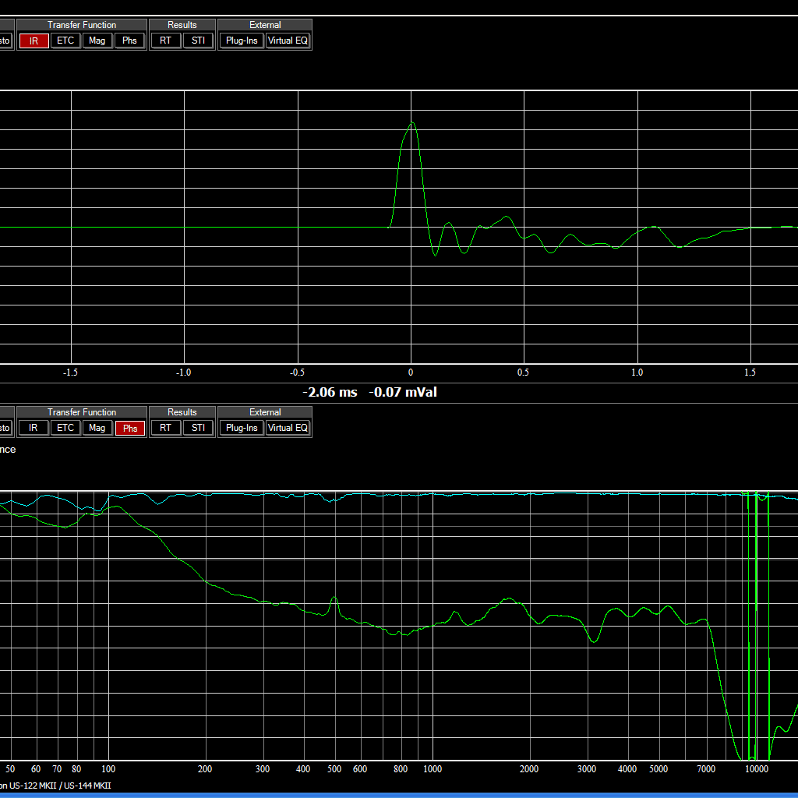
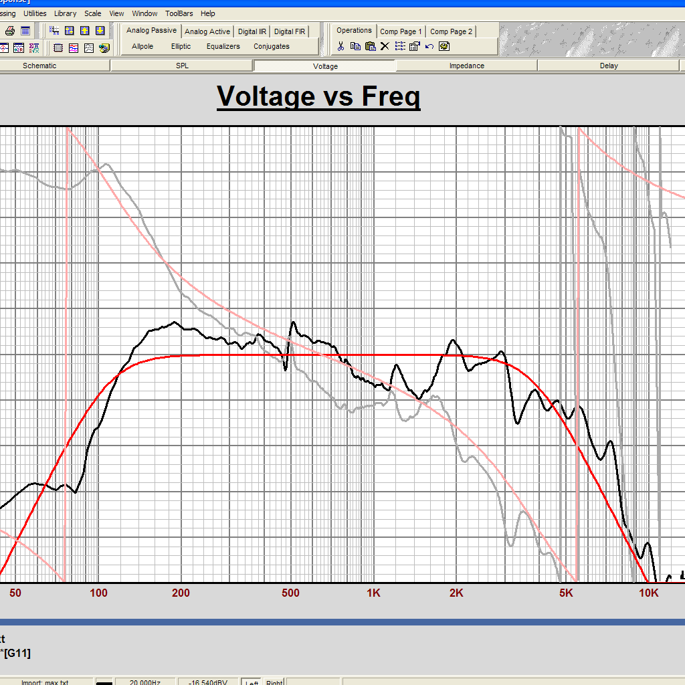
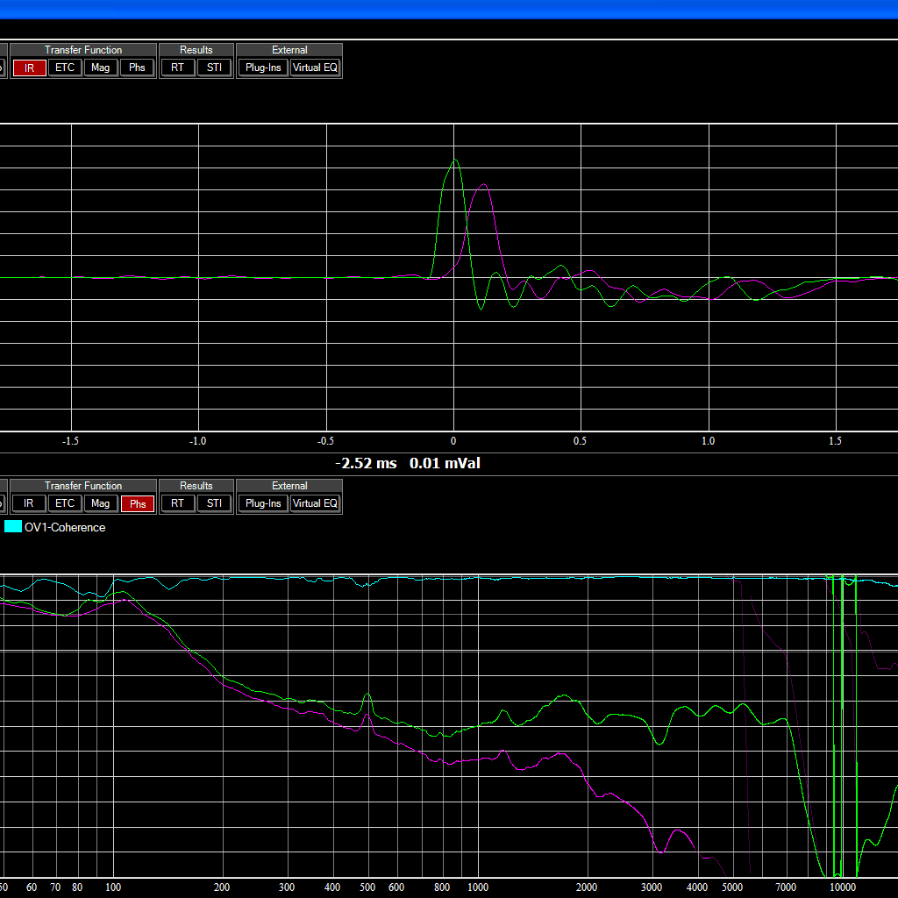

On the bench is a measurement laptop with Smaart open, a mic on a stand and a mid speaker in a closed box. The delay finder is snapped to the loudest part of the impulse response, and that is exactly the problem.
On several instances last week I have been talking to people about how to acquire valid dual FFT measurements. It really struck me how much misunderstanding still floats about, so here we go: a crash course in measurements, KBLsystems-style.
First: use music
Dual FFT means we can finally get rid of that annoying pink or white noise at terrorising levels. Just use your favourite music! As long as it contains enough spectral content it will be a perfect source, and you can use both eye and ear in your system tuning. Keep a keen eye on your coherence tracer to see if your program material works.
Second: the delay finder
Surely you can use the delay finder function to find the overall time difference between the reference and measurement signals, but be aware that all software will snap this to the maximum of the impulse response. That can be quite challenging when the IR is smeared over time, for example in a filtered sub response, and it will yield the wrong phase response.
Let me elaborate the latter.

This represents a close-mic measurement of a mid speaker. Clearly one can see the low-end magnitude roll-off and its associated phase behaviour of a small speaker in a closed cabinet.
In the following picture, the graph above shows the IR with the delay finder nicely snapped to the maximum of the IR:


We will now show you why this is wrong. The high-end roll-off in magnitude, which is partly due to the inductance of the voice coil, should also find its counterpart in phase behaviour. But in the above graph one is led to believe that this is not the case.
Next picture is a simulation I made:


The black line is the imported measurement, and the red line is a constructed model based on this measurement. The thin red line shows the associated minimum-phase behaviour. So the measured phase should look like this. In fact, the thin black line already shows the correct trend.
Now how do we acquire this? Simple! Adjust the delay finder by hand to the onset of the impulse response:


Tada! Valid measurement! Now bust your heads on what I'm actually doing here <grin> ;)